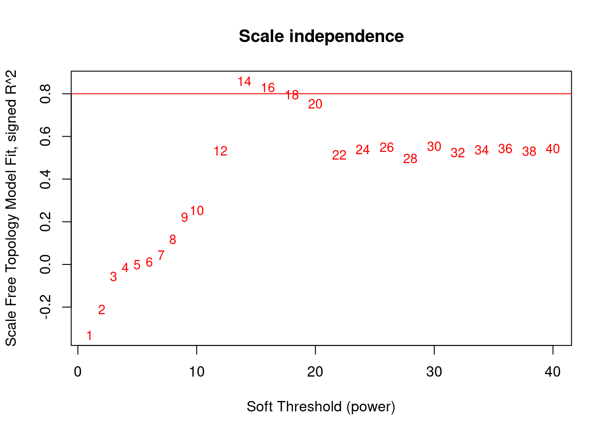
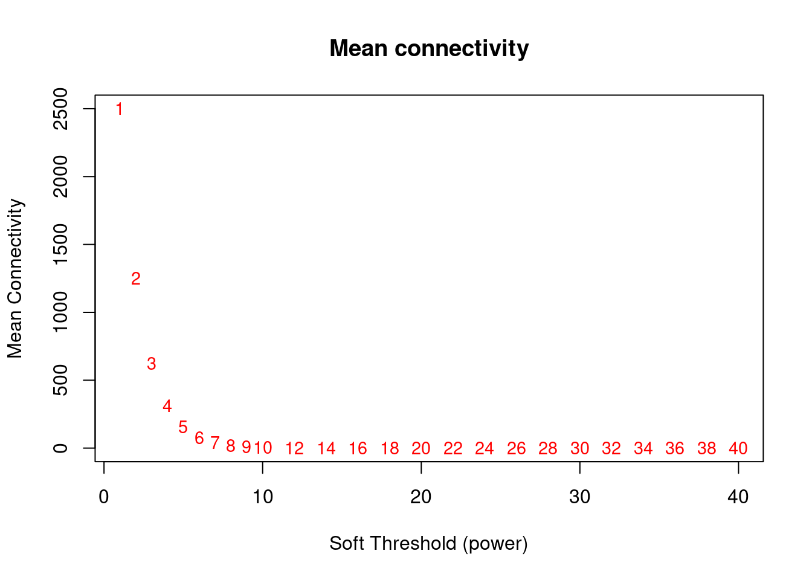
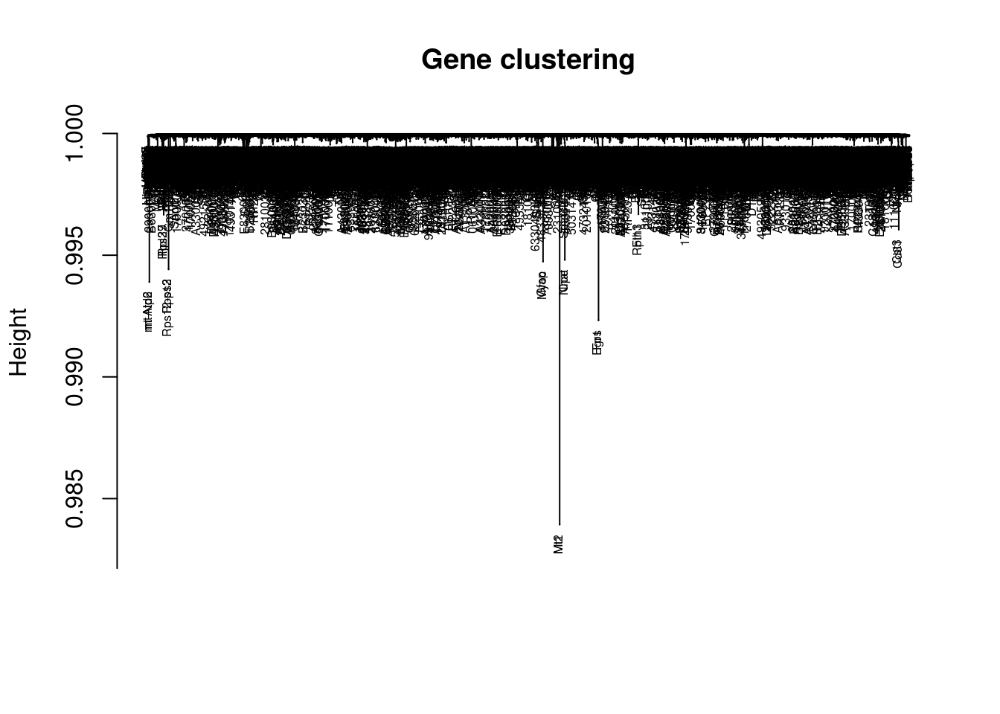
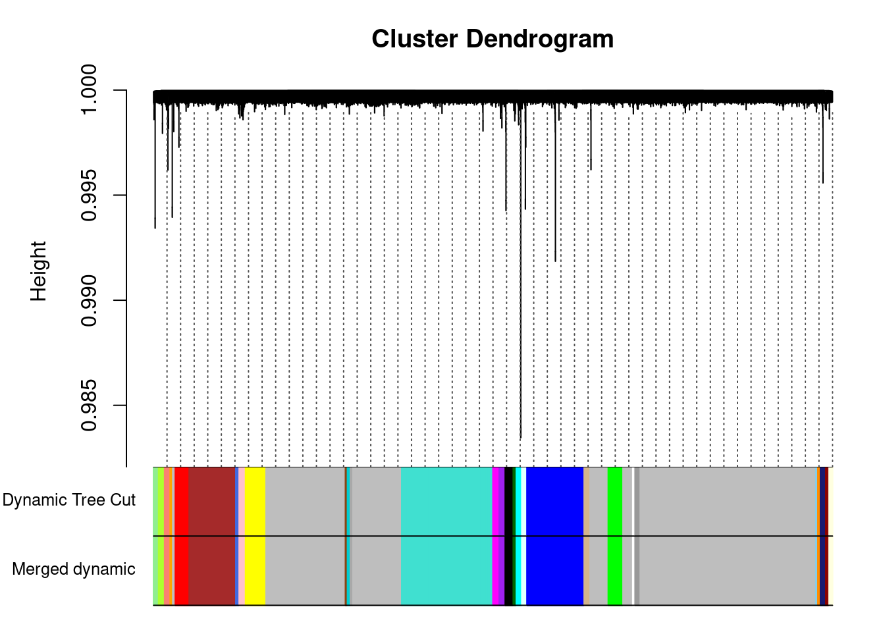
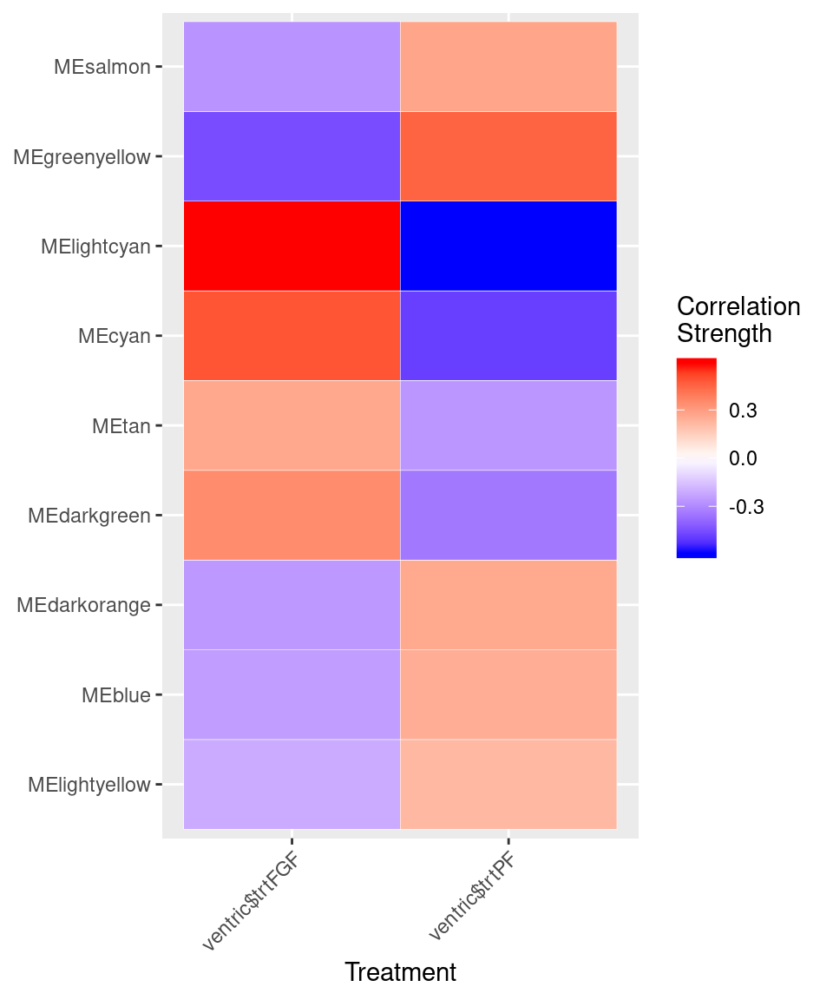
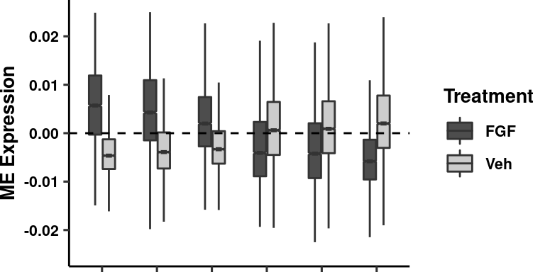
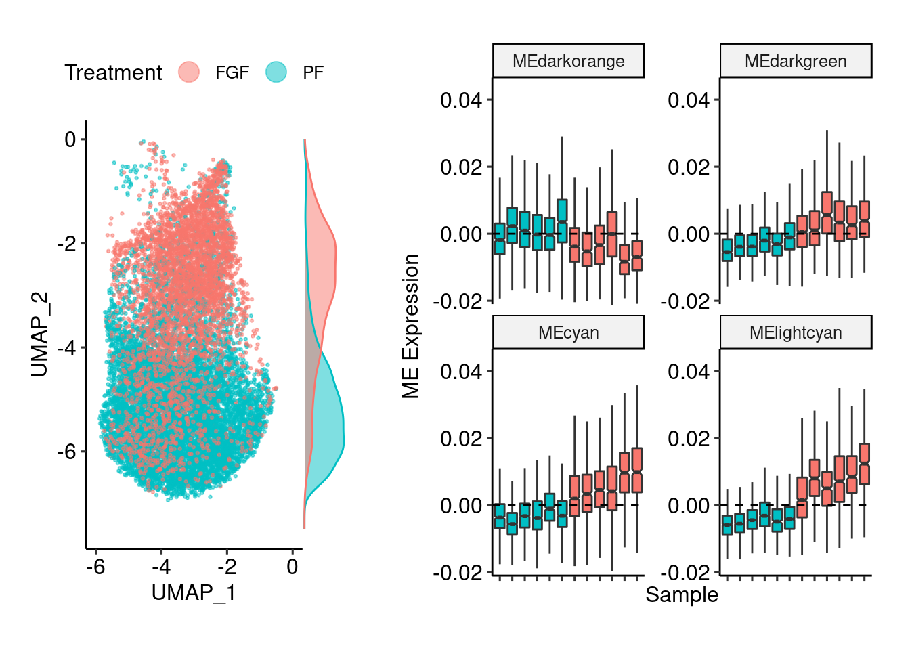
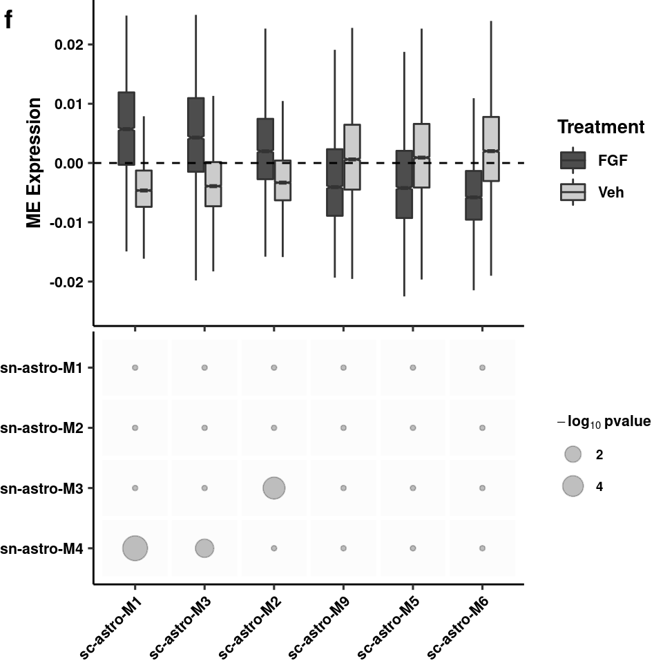

R Notebook
Last updated: 2019-10-29
Checks: 6 1
Knit directory: fgf_alldata/
This reproducible R Markdown analysis was created with workflowr (version 1.4.0). The Checks tab describes the reproducibility checks that were applied when the results were created. The Past versions tab lists the development history.
Great! Since the R Markdown file has been committed to the Git repository, you know the exact version of the code that produced these results.
The global environment had objects present when the code in the R Markdown file was run. These objects can affect the analysis in your R Markdown file in unknown ways. For reproduciblity it’s best to always run the code in an empty environment. Use wflow_publish or wflow_build to ensure that the code is always run in an empty environment.
The following objects were defined in the global environment when these results were created:
| Name | Class | Size |
|---|---|---|
| data | environment | 56 bytes |
| env | environment | 56 bytes |
The command set.seed(20191021) was run prior to running the code in the R Markdown file. Setting a seed ensures that any results that rely on randomness, e.g. subsampling or permutations, are reproducible.
Great job! Recording the operating system, R version, and package versions is critical for reproducibility.
Nice! There were no cached chunks for this analysis, so you can be confident that you successfully produced the results during this run.
Great job! Using relative paths to the files within your workflowr project makes it easier to run your code on other machines.
Great! You are using Git for version control. Tracking code development and connecting the code version to the results is critical for reproducibility. The version displayed above was the version of the Git repository at the time these results were generated.
Note that you need to be careful to ensure that all relevant files for the analysis have been committed to Git prior to generating the results (you can use wflow_publish or wflow_git_commit). workflowr only checks the R Markdown file, but you know if there are other scripts or data files that it depends on. Below is the status of the Git repository when the results were generated:
Ignored files:
Ignored: .Rproj.user/
Ignored: test_files/
Untracked files:
Untracked: code/sc_functions.R
Untracked: data/fgf_filtered_nuclei.RDS
Untracked: data/filtglia.RDS
Untracked: data/glia/
Untracked: data/lps1.txt
Untracked: data/mcao1.txt
Untracked: data/mcao_d3.txt
Untracked: data/mcaod7.txt
Untracked: data/neur_astro_induce.xlsx
Untracked: data/neuron/
Untracked: data/synaptic_activity_induced.xlsx
Untracked: dge_resample.pdf
Untracked: docs/figure/1_initial_processing.Rmd/
Untracked: docs/figure/9_wc_processing.Rmd/
Untracked: gotermdown.pdf
Untracked: gotermup.pdf
Untracked: olig_ttest_padj.csv
Untracked: output/agrp_pcgenes.csv
Untracked: output/all_wc_markers.csv
Untracked: output/allglia_wgcna_genemodules.csv
Untracked: output/glia/
Untracked: output/glial_markergenes.csv
Untracked: output/integrated_all_markergenes.csv
Untracked: output/integrated_neuronmarkers.csv
Untracked: output/neuron/
Untracked: wc_de.pdf
Note that any generated files, e.g. HTML, png, CSS, etc., are not included in this status report because it is ok for generated content to have uncommitted changes.
These are the previous versions of the R Markdown and HTML files. If you’ve configured a remote Git repository (see ?wflow_git_remote), click on the hyperlinks in the table below to view them.
| File | Version | Author | Date | Message |
|---|---|---|---|---|
| html | 3b5cbe7 | Full Name | 2019-10-28 | Build site. |
| Rmd | 650ab6b | Full Name | 2019-10-28 | wflow_git_commit(all = T) |
Load Libraries
library(Seurat)
library(WGCNA)
library(cluster)
library(parallelDist)
library(ggsci)
library(emmeans)
library(lme4)
library(ggbeeswarm)
library(genefilter)
library(tidyverse)
library(reshape2)
library(igraph)
library(gProfileR)
library(ggpubr)
library(cowplot)
library(here)
library(ggExtra)Extract Cells for WGCNA
Calculate softpower
enableWGCNAThreads()Allowing parallel execution with up to 79 working processes.datExpr <- as.matrix(t(ventric[["SCT"]]@scale.data[ventric[["SCT"]]@var.features, ]))
gsg <- goodSamplesGenes(datExpr, verbose = 3) Flagging genes and samples with too many missing values...
..step 1powers <- c(c(1:10), seq(from = 12, to = 40, by = 2))
sft <- pickSoftThreshold(datExpr,
dataIsExpr = TRUE, powerVector = powers, corOptions = list(use = "p"),
networkType = "signed"
) Power SFT.R.sq slope truncated.R.sq mean.k. median.k. max.k.
1 1 0.332000 604.00 0.469 2.50e+03 2.50e+03 2.51e+03
2 2 0.210000 247.00 0.507 1.25e+03 1.25e+03 1.26e+03
3 3 0.055600 77.10 0.534 6.25e+02 6.25e+02 6.33e+02
4 4 0.014400 29.80 0.568 3.13e+02 3.13e+02 3.18e+02
5 5 0.000624 4.63 0.600 1.57e+02 1.56e+02 1.60e+02
6 6 0.011000 -16.50 0.549 7.83e+01 7.83e+01 8.08e+01
7 7 0.042900 -27.00 0.484 3.92e+01 3.92e+01 4.08e+01
8 8 0.117000 -38.60 0.377 1.96e+01 1.96e+01 2.07e+01
9 9 0.220000 -90.40 0.245 9.82e+00 9.81e+00 1.05e+01
10 10 0.253000 -41.30 0.343 4.91e+00 4.91e+00 5.34e+00
11 12 0.533000 -88.80 0.399 1.23e+00 1.23e+00 1.40e+00
12 14 0.858000 -40.20 0.980 3.09e-01 3.08e-01 3.74e-01
13 16 0.830000 -25.80 0.944 7.75e-02 7.73e-02 1.03e-01
14 18 0.795000 -16.90 0.931 1.95e-02 1.94e-02 2.95e-02
15 20 0.753000 -10.60 0.936 4.90e-03 4.87e-03 9.40e-03
16 22 0.514000 -13.20 0.378 1.23e-03 1.22e-03 3.73e-03
17 24 0.540000 -10.10 0.414 3.11e-04 3.07e-04 1.71e-03
18 26 0.550000 -7.86 0.432 7.89e-05 7.72e-05 8.72e-04
19 28 0.498000 -6.05 0.390 2.01e-05 1.94e-05 4.71e-04
20 30 0.555000 -5.08 0.435 5.20e-06 4.88e-06 2.62e-04
21 32 0.525000 -4.18 0.425 1.38e-06 1.23e-06 1.49e-04
22 34 0.536000 -3.59 0.424 3.82e-07 3.10e-07 8.47e-05
23 36 0.543000 -3.15 0.426 1.14e-07 7.80e-08 4.85e-05
24 38 0.532000 -2.76 0.489 3.85e-08 1.97e-08 2.78e-05
25 40 0.543000 -2.53 0.490 1.49e-08 4.96e-09 1.60e-05cex1 <- 0.9
plot(sft$fitIndices[, 1], -sign(sft$fitIndices[, 3]) * sft$fitIndices[, 2], xlab = "Soft Threshold (power)", ylab = "Scale Free Topology Model Fit, signed R^2", type = "n", main = paste("Scale independence"))
text(sft$fitIndices[, 1], -sign(sft$fitIndices[, 3]) * sft$fitIndices[, 2], labels = powers, cex = cex1, col = "red")
abline(h = 0.80, col = "red")
| Version | Author | Date |
|---|---|---|
| 3b5cbe7 | Full Name | 2019-10-28 |
# Mean Connectivity Plot
plot(sft$fitIndices[, 1], sft$fitIndices[, 5], xlab = "Soft Threshold (power)", ylab = "Mean Connectivity", type = "n", main = paste("Mean connectivity"))
text(sft$fitIndices[, 1], sft$fitIndices[, 5], labels = powers, cex = cex1, col = "red")
| Version | Author | Date |
|---|---|---|
| 3b5cbe7 | Full Name | 2019-10-28 |
Generate TOM
softPower <- 14
SubGeneNames <- colnames(datExpr)
adj <- adjacency(datExpr, type = "signed", power = softPower)
diag(adj) <- 0
TOM <- TOMsimilarityFromExpr(datExpr, networkType = "signed", TOMType = "signed", power = softPower, maxPOutliers = 0.05)TOM calculation: adjacency..
..will use 79 parallel threads.
Fraction of slow calculations: 0.000000
..connectivity..
..matrix multiplication (system BLAS)..
..normalization..
..done.colnames(TOM) <- rownames(TOM) <- SubGeneNames
dissTOM <- 1 - TOM
geneTree <- hclust(as.dist(dissTOM), method = "complete") # use complete for method rather than average (gives better results)
plot(geneTree, xlab = "", sub = "", cex = .5, main = "Gene clustering", hang = .001)
| Version | Author | Date |
|---|---|---|
| 3b5cbe7 | Full Name | 2019-10-28 |
Identify Modules
minModuleSize <- 15
x <- 2
dynamicMods <- cutreeDynamic(
dendro = geneTree, distM = as.matrix(dissTOM),
method = "hybrid", pamStage = F, deepSplit = x,
minClusterSize = minModuleSize
) ..cutHeight not given, setting it to 1 ===> 99% of the (truncated) height range in dendro.
..done.dynamicColors <- labels2colors(dynamicMods) # label each module with a unique color
plotDendroAndColors(geneTree, dynamicColors, "Dynamic Tree Cut",
dendroLabels = FALSE, hang = 0.03, addGuide = TRUE, guideHang = 0.05,
main = "Gene dendrogram and module colors"
) # plot the modules with colors
| Version | Author | Date |
|---|---|---|
| 3b5cbe7 | Full Name | 2019-10-28 |
Calculate Eigengenes and Merge Close Modules
MEs <- moduleEigengenes(datExpr, dynamicColors)$eigengenes
ME1 <- MEs
row.names(ME1) <- row.names(datExpr)
MEDiss <- 1 - cor(MEs)
METree <- hclust(as.dist(MEDiss), method = "average")
plot(METree, main = "Clustering of module eigengenes", xlab = "", sub = "")
MEDissThres <- 0.2
abline(h = MEDissThres, col = "red")
| Version | Author | Date |
|---|---|---|
| 3b5cbe7 | Full Name | 2019-10-28 |
The merged module colors
merge <- mergeCloseModules(datExpr, dynamicColors, cutHeight = MEDissThres, verbose = 3) mergeCloseModules: Merging modules whose distance is less than 0.2
multiSetMEs: Calculating module MEs.
Working on set 1 ...
moduleEigengenes: Calculating 30 module eigengenes in given set.
Calculating new MEs...
multiSetMEs: Calculating module MEs.
Working on set 1 ...
moduleEigengenes: Calculating 30 module eigengenes in given set.mergedColors <- merge$colors
mergedMEs <- merge$newMEs
moduleColors <- mergedColors
MEs <- mergedMEs
modulekME <- signedKME(datExpr, MEs)Plot merged modules
plotDendroAndColors(geneTree, cbind(dynamicColors, mergedColors),
c("Dynamic Tree Cut", "Merged dynamic"),
dendroLabels = FALSE, hang = 0.03,
addGuide = TRUE, guideHang = 0.05
)
| Version | Author | Date |
|---|---|---|
| 3b5cbe7 | Full Name | 2019-10-28 |
moduleColors <- mergedColors
MEs <- mergedMEs
modulekME <- signedKME(datExpr, MEs)modules <- MEs
c_modules <- data.frame(moduleColors)
row.names(c_modules) <- colnames(datExpr)
module.list.set1 <- substring(colnames(modules), 3)
index.set1 <- 0
Network <- list()
for (i in 1:length(module.list.set1)) {
index.set1 <- which(c_modules == module.list.set1[i])
Network[[i]] <- row.names(c_modules)[index.set1]
}
names(Network) <- module.list.set1Filter metadata table and correlate with eigengenes
nGenes <- ncol(datExpr)
nSamples <- nrow(datExpr)
MEs <- orderMEs(MEs)
MEs %>% select(-MEgrey) -> MEs
var <- model.matrix(~ 0 + ventric$trt)
moduleTraitCor <- cor(MEs, var, use = "p")
cor <- moduleTraitCor[abs(moduleTraitCor[, 1]) > .2, ]
moduleTraitPvalue <- corPvalueStudent(moduleTraitCor, nSamples)
cor <- melt(cor)
ggplot(cor, aes(Var2, Var1)) + geom_tile(aes(fill = value), colour = "white") +
scale_fill_gradient2( midpoint = 0, low = "blue", mid = "white",
high = "red", space = "Lab", name = "Correlation \nStrength") +
theme(axis.text.x = element_text(angle = 45, hjust = 1)) + xlab("Treatment") + ylab(NULL)
| Version | Author | Date |
|---|---|---|
| 3b5cbe7 | Full Name | 2019-10-28 |
hubgenes<-lapply(seq_len(length(Network)), function(x) {
dat<-modulekME[Network[[x]],]
dat<-dat[order(-dat[paste0("kME",names(Network)[x])]),]
gene<-rownames(dat)
return(gene)
})
names(hubgenes)<-names(Network)
d <- unlist(hubgenes)
d <- data.frame(gene = d,
vec = names(d))
write_csv(d, path=here("output/glia/wgcna/wc_astro_genemods.csv"))Run linear model to calculate sig diff mods
data <- data.frame(MEs,
trt = ventric$trt,
sample = as.factor(ventric$sample),
batch = as.factor(ventric$batch)
)
mod <- lapply(colnames(MEs)[grepl("^ME", colnames(MEs))], function(me) {
tryCatch({
mod <- lmer(MEs[[me]] ~ trt + (1 | batch) + (1 | sample), data = data)
pairwise <- emmeans(mod, pairwise ~ trt)
plot <- data.frame(plot(pairwise, plotIt = F)$data)
sig <- as.data.frame(pairwise$contrasts)
return(sig)
}, error = function(err) {
print(err)
})
})Warning in checkConv(attr(opt, "derivs"), opt$par, ctrl =
control$checkConv, : Model failed to converge with max|grad| = 0.00943197
(tol = 0.002, component 1)Warning in checkConv(attr(opt, "derivs"), opt$par, ctrl =
control$checkConv, : Model failed to converge with max|grad| = 0.00238047
(tol = 0.002, component 1)names(mod) <- colnames(MEs)[grepl("^ME", colnames(MEs))]
mod <- data.frame(unlist(mod))
mod %>%
add_rownames("test") %>%
separate(test, c("mod", "measure")) %>%
dcast(measure ~ mod, value = unlist.mod.) %>%
as.data.frame() %>%
t() -> testWarning: Deprecated, use tibble::rownames_to_column() instead.Warning: Expected 2 pieces. Additional pieces discarded in 58 rows [5,
6, 11, 12, 17, 18, 23, 24, 29, 30, 35, 36, 41, 42, 47, 48, 53, 54, 59,
60, ...].colnames(test) <- test[1, ]
data.frame(test) %>%
add_rownames("mod") %>%
slice(2:nrow(.)) %>%
select(p, estimate, mod) %>%
mutate(p = as.numeric(as.character(p)), estimate = as.numeric(as.character(estimate))) %>%
filter(p < 0.05, abs(estimate) > 0.005) %>%
arrange(log10(p) * abs(estimate)) -> astro_modsWarning: Deprecated, use tibble::rownames_to_column() instead.astro_mods$mod <- gsub(astro_mods$mod, pattern = "ME", replacement = "")data <- data.frame(MEs,
trt = ventric$trt,
sample = as.factor(ventric$sample)
)
data <- melt(data, id.vars = c("trt", "sample"))
data %>% filter(variable %in% paste0("ME", astro_mods$mod[1:4])) -> data
boxplot <- ggplot(data = data, aes(x = fct_reorder(sample, value), y = as.numeric(value))) +
geom_boxplot(aes(fill = trt), notch = T, outlier.shape = NA) +
facet_wrap(. ~ variable, scales = "free_y", ncol = 2) +
theme_pubr(legend = "none") + geom_hline(yintercept = 0, linetype = "dashed") +
coord_cartesian(ylim = quantile(data$value, c(0.001, 0.999))) + xlab("Sample") +
ylab("ME Expression") + theme(axis.text.x = element_blank())
boxplot
| Version | Author | Date |
|---|---|---|
| 3b5cbe7 | Full Name | 2019-10-28 |
astro_umap <- as.data.frame(Embeddings(ventric, reduction = "umap")[, 1:2])
astro_umap$trt <- as.character(ventric$trt)
astro_plot <- ggplot(astro_umap, aes(UMAP_1, UMAP_2, colour = trt)) +
geom_point(alpha = 0.5, size = .5) + xlim(c(-6, 0)) + scale_colour_discrete(name = "Treatment") +
guides(colour = guide_legend(override.aes = list(size = 5))) +
ylim(c(-7.5, 0)) + theme_pubr()
umap_gg <- ggMarginal(astro_plot, groupColour = T, groupFill = T, margins = "y")Warning: Removed 146 rows containing missing values (geom_point).plot_grid(umap_gg, boxplot, align = "hv", rel_widths = c(1, 1.5), scale = 0.9)Warning: Graphs cannot be vertically aligned unless the axis parameter is
set. Placing graphs unaligned.Warning: Graphs cannot be horizontally aligned unless the axis parameter is
set. Placing graphs unaligned.
| Version | Author | Date |
|---|---|---|
| 3b5cbe7 | Full Name | 2019-10-28 |
goterms <- lapply(hubgenes[astro_mods$mod], function(x) {
x <- gprofiler(x,
ordered_query = T, organism = "mmusculus", significant = T, custom_bg = colnames(datExpr),
src_filter = c("GO:BP", "REAC", "KEGG"), hier_filtering = "strong",
min_isect_size = 2,
sort_by_structure = T, exclude_iea = T,
min_set_size = 10, max_set_size = 300, correction_method = "fdr"
)
x <- x[order(x$p.value), ]
return(x)
})nuc_mods <- read_csv(file = here("output/glia/wgcna/astro_wgcna_genemodules.csv"))
nuc_mods %>%
as.data.frame() %>%
filter(id != "grey") %>%
dplyr::group_by(id) %>%
dplyr::group_split() %>%
map("gene") -> nuc_gene
names(nuc_gene) <- unique(nuc_mods$id)[1:8]
wc_nuc_overlap <- sapply(nuc_gene, function(x) {
sapply(hubgenes[c("darkorange", "darkgreen", "cyan", "lightcyan")], function(y) {
1 - phyper(sum(x %in% y), length(y), 5000 - length(y), length(x), log.p = F)
})
})
wc_nuc_overlap <- reshape2::melt(wc_nuc_overlap)
wc_nuc_overlap %>%
mutate(value = p.adjust(wc_nuc_overlap$value, n = dim(wc_nuc_overlap)[1] * dim(wc_nuc_overlap)[2])) %>%
mutate(sig = if_else(value > 0.05, "",
if_else(.05 > value & value > .01, "*",
if_else(.01 > value & value > .001, "**",
if_else(.001 > value, "***", "")
)
)
)) -> wc_nuc_overlap
overlap <- ggplot(wc_nuc_overlap, aes(x = Var1, y = Var2, fill = -log10(value + 2e-16), label = sig)) +
geom_tile(size = 1, color = "white") + coord_flip() + theme_bw() + ylab(NULL) + xlab("Module") +
scale_fill_gsea(name = expression(-log[10] ~ pvalue)) + geom_text()
overlap
| Version | Author | Date |
|---|---|---|
| 3b5cbe7 | Full Name | 2019-10-28 |
save.image(file = here("output/glia/wgcna/astro_wgcna.RDS"))
sessionInfo()R version 3.5.3 (2019-03-11)
Platform: x86_64-pc-linux-gnu (64-bit)
Running under: Storage
Matrix products: default
BLAS/LAPACK: /usr/lib64/libopenblas-r0.3.3.so
locale:
[1] LC_CTYPE=en_DK.UTF-8 LC_NUMERIC=C
[3] LC_TIME=en_DK.UTF-8 LC_COLLATE=en_DK.UTF-8
[5] LC_MONETARY=en_DK.UTF-8 LC_MESSAGES=en_DK.UTF-8
[7] LC_PAPER=en_DK.UTF-8 LC_NAME=C
[9] LC_ADDRESS=C LC_TELEPHONE=C
[11] LC_MEASUREMENT=en_DK.UTF-8 LC_IDENTIFICATION=C
attached base packages:
[1] stats graphics grDevices utils datasets methods base
other attached packages:
[1] ggExtra_0.9 here_0.1 cowplot_1.0.0
[4] ggpubr_0.2.1 magrittr_1.5 gProfileR_0.6.7
[7] igraph_1.2.4.1 reshape2_1.4.3 forcats_0.4.0
[10] stringr_1.4.0 dplyr_0.8.3 purrr_0.3.2
[13] readr_1.3.1.9000 tidyr_0.8.3 tibble_2.1.3
[16] tidyverse_1.2.1 genefilter_1.64.0 ggbeeswarm_0.6.0
[19] ggplot2_3.2.1 lme4_1.1-21 Matrix_1.2-17
[22] emmeans_1.3.5.1 ggsci_2.9 parallelDist_0.2.4
[25] cluster_2.1.0 WGCNA_1.68 fastcluster_1.1.25
[28] dynamicTreeCut_1.63-1 Seurat_3.0.3.9036
loaded via a namespace (and not attached):
[1] reticulate_1.13 R.utils_2.9.0 tidyselect_0.2.5
[4] robust_0.4-18.1 RSQLite_2.1.1 AnnotationDbi_1.44.0
[7] htmlwidgets_1.3 grid_3.5.3 Rtsne_0.15
[10] munsell_0.5.0 codetools_0.2-16 ica_1.0-2
[13] preprocessCore_1.44.0 miniUI_0.1.1.1 future_1.14.0
[16] withr_2.1.2 colorspace_1.4-1 Biobase_2.42.0
[19] highr_0.8 knitr_1.23 rstudioapi_0.10
[22] stats4_3.5.3 ROCR_1.0-7 robustbase_0.93-5
[25] ggsignif_0.5.0 gbRd_0.4-11 listenv_0.7.0
[28] labeling_0.3 Rdpack_0.11-0 git2r_0.25.2
[31] bit64_0.9-7 rprojroot_1.3-2 vctrs_0.2.0
[34] coda_0.19-3 generics_0.0.2 TH.data_1.0-10
[37] xfun_0.8 R6_2.4.0 doParallel_1.0.14
[40] rsvd_1.0.2 bitops_1.0-6 assertthat_0.2.1
[43] promises_1.0.1 SDMTools_1.1-221.1 scales_1.0.0
[46] multcomp_1.4-10 nnet_7.3-12 beeswarm_0.2.3
[49] gtable_0.3.0 npsurv_0.4-0 globals_0.12.4
[52] sandwich_2.5-1 workflowr_1.4.0 rlang_0.4.0
[55] zeallot_0.1.0 splines_3.5.3 lazyeval_0.2.2
[58] acepack_1.4.1 impute_1.56.0 broom_0.5.2
[61] checkmate_1.9.4 modelr_0.1.4 yaml_2.2.0
[64] backports_1.1.4 httpuv_1.5.1 Hmisc_4.2-0
[67] tools_3.5.3 ellipsis_0.2.0.1 gplots_3.0.1.1
[70] RColorBrewer_1.1-2 BiocGenerics_0.28.0 ggridges_0.5.1
[73] Rcpp_1.0.2 plyr_1.8.4 base64enc_0.1-3
[76] RCurl_1.95-4.12 rpart_4.1-15 pbapply_1.4-1
[79] S4Vectors_0.20.1 zoo_1.8-6 haven_2.1.0
[82] ggrepel_0.8.1 fs_1.3.1 data.table_1.12.2
[85] lmtest_0.9-37 RANN_2.6.1 mvtnorm_1.0-11
[88] whisker_0.3-2 fitdistrplus_1.0-14 matrixStats_0.54.0
[91] mime_0.7 hms_0.5.0 lsei_1.2-0
[94] evaluate_0.14 xtable_1.8-4 XML_3.98-1.20
[97] readxl_1.3.1 IRanges_2.16.0 gridExtra_2.3
[100] compiler_3.5.3 KernSmooth_2.23-15 crayon_1.3.4
[103] minqa_1.2.4 R.oo_1.22.0 htmltools_0.3.6
[106] later_0.8.0 pcaPP_1.9-73 Formula_1.2-3
[109] rrcov_1.4-7 RcppParallel_4.4.3 lubridate_1.7.4
[112] DBI_1.0.0 MASS_7.3-51.4 boot_1.3-22
[115] cli_1.1.0 R.methodsS3_1.7.1 gdata_2.18.0
[118] parallel_3.5.3 metap_1.1 pkgconfig_2.0.2
[121] fit.models_0.5-14 foreign_0.8-71 plotly_4.9.0
[124] xml2_1.2.0 foreach_1.4.4 annotate_1.60.1
[127] vipor_0.4.5 estimability_1.3 rvest_0.3.4
[130] bibtex_0.4.2 digest_0.6.20 sctransform_0.2.0
[133] RcppAnnoy_0.0.12 tsne_0.1-3 cellranger_1.1.0
[136] rmarkdown_1.13 leiden_0.3.1 htmlTable_1.13.1
[139] uwot_0.1.3 shiny_1.3.2 gtools_3.8.1
[142] nloptr_1.2.1 nlme_3.1-140 jsonlite_1.6
[145] viridisLite_0.3.0 pillar_1.4.2 lattice_0.20-38
[148] httr_1.4.1 DEoptimR_1.0-8 survival_2.44-1.1
[151] GO.db_3.7.0 glue_1.3.1 png_0.1-7
[154] iterators_1.0.10 bit_1.1-14 stringi_1.4.3
[157] blob_1.1.1 latticeExtra_0.6-28 caTools_1.17.1.2
[160] memoise_1.1.0 irlba_2.3.3 future.apply_1.3.0
[163] ape_5.3